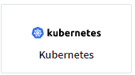

要求變更文件
要求變更文件 編輯此頁面
編輯此頁面 瞭解如何作出貢獻
瞭解如何作出貢獻在Kubernetes上設定代理程式
使用Cloud Insights "Telegraf" 做為收集整合資料的代理程式。Telegraf是外掛程式導向的伺服器代理程式、可用來收集及報告度量、事件及記錄。輸入外掛程式可透過直接存取系統/作業系統、呼叫協力廠商API或聆聽已設定的串流（例如 卡夫卡、塔斯D等）。輸出外掛程式可用來將收集到的度量、事件和記錄從代理程式傳送至Cloud Insights
目前的Telegraf版本Cloud Insights 是* 1.22.3*。

|
為確保稽核與資料報告的準確性、強烈建議您使用*網路時間傳輸協定（NTP）*或*簡易網路時間傳輸協定（SNTP）*來同步代理機器上的時間。 |
|
|
如果您想在安裝代理程式之前驗證安裝檔案、請閱讀「關於」 [Verifying Kubernetes Checksums]。 |
以營運者為基礎的安裝或以指令碼為基礎的安裝？
支援營運者支援客戶的Kubernetes叢集監控。Cloud InsightsNetApp Kubernetes監控操作員（NKMO）比指令碼安裝的監控方法更為完善、因為它可讓您更靈活地設定監控Cloud Insights 功能、以利從不受客戶驅動的組態介入措施中進行控制、並可強化監控K8s叢集中其他軟體的機會。
NKMO持續使用基礎的Telewraf軟體來收集、轉型及交付Cloud Insights 資料至自訂資源定義和自訂資源可強化此功能、針對每個K8s叢集進行自訂監控。
安裝代理程式
如果您正在安裝服務資料收集器、但尚未設定代理程式、系統會提示您先安裝適當作業系統的代理程式。本主題提供在下列作業系統上安裝Telegraf代理程式的說明：
若要安裝代理程式、您必須先執行下列動作：
-
登入您要用於代理程式的主機。
-
登入Cloud Insights 您的支援網站、前往*管理>資料收集器*。
-
按一下「+資料收集器」、然後選擇要安裝的資料收集器。
-
為您的主機選擇Kubernetes平台
-
請遵循其餘步驟。
若要在Windows、Linux或Mac上安裝代理程式、請遵循 "這些指示"。
|
|
在主機上安裝代理程式之後、您就不需要在該主機上重新安裝代理程式。 |

|
在伺服器/ VM上安裝代理程式之後Cloud Insights 、除了從您設定的任何資料收集器收集資料、還會從該系統收集度量資料。這些指標的收集方式如下 "「節點」度量"。 |
|
|
如果您使用的是Proxy、請先閱讀平台的Proxy指示、再安裝Telegraf代理程式。 |
在Kubernetes上安裝代理程式
Kubernetes提供兩種收集資料的方法：
-
NetApp Kubernetes監控操作員組態。這是Kubernetes的建議安裝方法。
-
傳統的指令碼型代理程式安裝（不建議）
安裝說明視您選擇的項目而有所不同。

-
Kubernetes 1.17或更新版本可支援NetApp Kubernetes監控操作員安裝。搭配Docker Container執行時間使用Cloud Insights 時、即可顯示NFS和iSCSI的Pod對PV對儲存設備對應；其他執行時間則只顯示iSCSI。
-
如果您是在OpenShift 4.6 - 4.8上執行、除了確保符合這些先決條件之外、您還必須遵循下列* OpenShift Instructions *。
-
下列命令必須可用：curle、Sudo（指令碼型安裝不需要）、_openssl、shap256sum_和_kuvectl。若要獲得最佳結果、請將這些命令新增至路徑。
-
必須安裝Kube-state指標。如需詳細資訊、請參閱下方。Kube-state指標會隨著以操作員為基礎的安裝而自動安裝。
-
如果您使用的是Proxy、請遵循*設定Kubernetes*的Proxy支援一節中的指示。
-
如果您執行的Kubernetes變體需要安全性內容限制、請遵循*設定代理程式從Kubernetes*收集資料一節中的指示。以營運者為基礎的安裝會為您安裝。
-
您必須擁有建立Kubernetes叢集角色和角色繫結的權限。
監控功能僅安裝在Linux節點上
支援監控執行Linux的Kubernetes節點、方法是指定Kubernetes節點選取器、在這些平台上尋找下列Kubernetes標籤：Cloud Insights
| 平台 | 標籤 |
|---|---|
Kubernetes v1.17及更新版本 |
Kubernetes.IO/OS = Linux |
Rancher + Catchs.IO做為協調/ Kubernetes平台 |
Catin.IO/OS = Linux |
NetApp Kubernetes監控操作員安裝

-
輸入叢集名稱和命名空間。
-
一旦輸入這些程式碼、您就可以複製代理程式安裝程式程式片段
-
按一下按鈕、將此片段複製到剪貼簿。
-
將程式碼片段貼到_bash_視窗中並執行。
-
安裝會自動繼續進行。完成後、按一下「完成設定」按鈕。
OpenShift指示
如果您是在OpenShift 4.6 - 4.8上執行、則必須變更「特殊權限模式」設定。執行下列命令以開啟代理程式進行編輯。如果您使用的命名空間不是「NetApp監控」、請在命令列中指定該命名空間：
kubectl edit agent agent-monitoring-netapp -n netapp-monitoring 在檔案中、將_特權 模式：假_變更為_權限模式：真_
為NetApp Kubernetes監控操作員設定Proxy支援
若要為監控操作員設定Proxy、請執行下列步驟。
首先、開啟_agent-監 控-NetApp_檔案進行編輯：
kubectl -n netapp-monitoring edit agent agent-monitoring-netapp 在此檔案的_spec__區段中、新增下列程式碼區塊：
spec:
proxy:
isAuProxyEnabled: <true or false>
isTelegrafProxyEnabled: <true or false>
isFluentbitProxyEnabled: <true or false>
password: <password for proxy, optional>
port: <port for proxy>
server: <server for proxy>
username: <username for proxy, optional>
noProxy: <comma separated list of IPs or resolvable hostnames that should bypass a proxy>
使用自訂/私有泊塢視窗儲存庫
如果使用自訂泊塢視窗儲存庫、請執行下列動作：
取得Docker密碼：
kubectl -n netapp-monitoring get secret docker -o yaml 從上述命令的輸出中複製/貼上_.dockerconfigjson__的值。
解碼Docker機密：
echo <paste from _.dockerconfigjson:_ output above> | base64 -d 此輸出將採用下列json格式：
{ "auths":
{"docker.<cluster>.cloudinsights.netapp.com" :
{"username":"<tenant id>",
"password":"<password which is the CI API key>",
"auth" :"<encoded username:password basic auth key. This is internal to docker>"}
}
}
登入Docker儲存庫：
docker login docker.<cluster>.cloudinsights.netapp.com (from step #2) -u <username from step #2> password: <password from docker secret step above>
從Cloud Insights 「畫面」中拉出「運算子」泊塢視窗影像：
docker pull docker.<cluster>.cloudinsights.netapp.com/netapp-monitoring:<version> 使用下列命令尋找<版本>欄位：
kubectl -n netapp-monitoring get deployment monitoring-operator | grep "image:" 根據您的企業原則、將「operator」泊塢視窗影像推送到您的「私有/本機/企業」泊塢視窗儲存庫。
將所有開放原始碼相依性下載到您的Private Docker登錄。需要下載下列開放原始碼映像：
docker.io/telegraf:1.21.4 gcr.io/kubebuilder/kube-rbac-proxy:v0.8.0 k8s.gcr.io/kube-state-metrics/kube-state-metrics:v2.3.0
如果已啟用Fluent位元、請同時下載：
docker.io/fluent-bit:1.8.12 docker.io/kubernetes-event-exporter:0.10
編輯代理程式CR以反映新的Docker repo位置、停用自動升級（若已啟用）。
kubectl -n netapp-monitoring edit agent agent-monitoring-netapp enableAutoUpgrade: false
docker-repo: <docker repo of the enterprise/corp docker repo> dockerRepoSecret: <optional: name of the docker secret of enterprise/corp docker repo, this secret should be already created on the k8s cluster in the same namespace>
在_spec__區段中、進行下列變更：
spec:
telegraf:
- name: ksm
substitutions:
- key: k8s.gcr.io
value: <same as "docker-repo" field above>
從指令碼型K8s監控升級為以操作員為基礎的
如果您已安裝以指令碼為基礎的Kubernetes監控、請依照下列步驟升級至以營運者為基礎的監控：
升級步驟
-
從指令碼型監控安裝中保留ConfigMap：
kubectl --namespace ci-monitoring get cm -o yaml > /tmp/telegraf-configs.yaml . 儲存K8s叢集名稱、以便在安裝K8s以操作者為基礎的監控解決方案時使用、以確保資料不中斷。
如果您不記得CI中K8s叢集的名稱、可以使用下列命令列從您儲存的組態中擷取：
cat /tmp/telegraf-configs.yaml | grep kubernetes_cluster | head -2 . 移除指令碼型監控
若要在Kubernetes上解除安裝以指令碼為基礎的代理程式、請執行下列步驟：
如果監控命名空間僅用於Telegraf：
kubectl --namespace ci-monitoring delete ds,rs,cm,sa,clusterrole,clusterrolebinding -l app=ci-telegraf
kubectl delete ns ci-monitoring
如果監控命名空間用於Telegraf以外的其他用途：
kubectl --namespace ci-monitoring delete ds,rs,cm,sa,clusterrole,clusterrolebinding -l app=ci-telegraf

指令碼型安裝
|
|
指令碼型安裝已過時。請使用Kubernetes以營運者為基礎的集合來監控Kubernetes叢集。 |

-
選擇代理程式存取金鑰。
-
按一下安裝對話方塊中的*複製代理程式安裝程式片段*按鈕。若要檢視命令區塊、您可以選擇按一下「+顯示代理程式安裝程式的程式碼片段_」按鈕。
-
將命令貼到_bash_視窗。
-
或者、您可以修改命令區塊、在最終版本的_.//$installerName_之前新增下列其中一項或兩項、以覆寫命名空間或提供叢集名稱做為install命令的一部分
-
Cluster_name=
-
命名空間=
它位於命令區塊中：
installerName=cloudinsights-kubernetes.sh ... && CLUSTER_NAME=<cluster_name> NAMESPACE=<new_namespace> sudo -E -H ./$installerName --download --install
_叢集名稱_是Cloud Insights 來自於Estres收集 度量的Kubernetes叢集名稱、而_names_是部署Telegraf代理程式的命名空間。如果指定的命名空間不存在、將會建立該命名空間。
-
-
準備好之後、請執行命令區塊。
-
命令會下載適當的代理程式安裝程式、安裝並設定預設組態。如果您尚未明確設定_namespace_、系統會提示您輸入。完成後、指令碼會重新啟動代理程式服務。此命令具有唯一的金鑰、有效時間為24小時。
-
完成後、按一下*完成設定*。
設定Kubernetes的Proxy支援-指令碼型
|
|
以下步驟概述設定_https_proxy/https_proxy_環境變數所需的動作。在某些Proxy環境中、使用者可能也需要設定_no_proxyEnvironments _變數。 |
對於位於Proxy後的系統、請執行下列步驟、為目前使用者*安裝Telegraf代理程式之前*設定_https_proxy_和/或_https_proxy_環境變數：
export https_proxy=<proxy_server>:<proxy_port> *安裝Telegraf代理程式之後、將適當的_https_proxy_和/或_https_proxy_環境變數新增並設定至_Telegraf-ds_取消保護套件和_Telegraf-rs_複本。
kubectl edit ds telegraf-ds
…
env:
- name: https_proxy
value: <proxy_server>:<proxy_port>
- name: HOSTIP
valueFrom:
fieldRef:
apiVersion: v1
fieldPath: status.hostIP
…
kubectl edit rs telegraf-rs
…
env:
- name: https_proxy
value: <proxy_server>:<proxy_port>
- name: HOSTIP
valueFrom:
fieldRef:
apiVersion: v1
fieldPath: status.hostIP
…
然後重新啟動Telegraf：
kubectl delete pod telegraf-ds-* kubectl delete pod telegraf-rs-*
示範設定、複本集、以及停止/啟動代理程式
將在Kubernetes叢集上建立示範集和複製集、以執行所需的Telegraf代理程式/ Pod。根據預設、這些Telegraf代理程式/ Pod會排程在主要和非主要節點上。
若要協助停止及重新啟動代理程式、請使用下列命令產生Telegraf示範設定Yaml和ReplicaSet Yaml。請注意、這些命令使用的是預設命名空間「CI監控」。如果您已設定自己的命名空間、請在這些及所有後續命令與檔案中取代該命名空間：
如果您已設定自己的命名空間、請在這些及所有後續命令與檔案中取代該命名空間：
kubectl --namespace ci-monitoring get ds telegraf-ds -o yaml > /tmp/telegraf-ds.yaml kubectl --namespace ci-monitoring get rs telegraf-rs -o yaml > /tmp/telegraf-rs.yaml
然後、您可以使用下列命令來停止及啟動Telegraf服務：
kubectl --namespace ci-monitoring delete ds telegraf-ds kubectl --namespace ci-monitoring delete rs telegraf-rs
kubectl --namespace ci-monitoring apply -f /tmp/telegraf-ds.yaml kubectl --namespace ci-monitoring apply -f /tmp/telegraf-rs.yaml
設定代理程式從Kubernetes收集資料
附註：指令碼型安裝的預設命名空間為_CI-監 控_。對於基於操作員的安裝、預設命名空間為_NetApp-監 控_。在涉及命名空間的命令中、請務必為安裝指定正確的命名空間。
執行代理程式的Pod需要存取下列項目：
-
主機路徑
-
組態對應
-
機密
這些Kubernetes物件會自動建立、做為Kubernetes代理程式安裝命令的一部分、此命令會在Cloud Insights 支援者介面中提供。Kubernetes的某些變種（例如OpenShift）會實作額外的安全層級、以封鎖對這些元件的存取。_SecurityContextConstraint_不是以Kubernetes代理程式安裝命令的一部分建立Cloud Insights 、此命令是以人工方式建立。建立後、重新啟動Telegraf Pod。
apiVersion: v1
kind: SecurityContextConstraints
metadata:
name: telegraf-hostaccess
creationTimestamp:
annotations:
kubernetes.io/description: telegraf-hostaccess allows hostpath volume mounts for restricted SAs.
labels:
app: ci-telegraf
priority: 10
allowPrivilegedContainer: true
defaultAddCapabilities: []
requiredDropCapabilities: []
allowedCapabilities: []
allowedFlexVolumes: []
allowHostDirVolumePlugin: true
volumes:
- hostPath
- configMap
- secret
allowHostNetwork: false
allowHostPorts: false
allowHostPID: false
allowHostIPC: false
seLinuxContext:
type: MustRunAs
runAsUser:
type: RunAsAny
supplementalGroups:
type: RunAsAny
fsGroup:
type: RunAsAny
readOnlyRootFilesystem: false
users:
- system:serviceaccount:ci-monitoring:monitoring-operator
groups: []
安裝kube狀態度量伺服器
|
|
以營運者為基礎的安裝會處理kube狀態指標的安裝。如果您執行的是以操作員為基礎的安裝、請跳過本節。 |
|
|
強烈建議使用Kube-state度量2.0版或更新版本、以充分利用完整功能集、包括將Kubernetes持續磁碟區（PV）連結至後端儲存裝置的功能。另請注意、使用Kube-state度量2.0版及更新版本時、Kubernetes物件標籤預設不會匯出。若要設定Kube-state度量以匯出Kubernetes物件標籤、您必須指定度量標籤「允許」清單。請參閱中的「」-「metric - label - owlist_」（公制標籤-允許清單_）選項 "Kube-state指標文件"。 |
請使用下列步驟安裝kube狀態度量伺服器（執行指令碼型安裝時需要）：
-
建立暫用資料夾（例如：//tmp/kube-n態-yaml-files/_）、然後從複製.yaml檔案 https://github.com/kubernetes/kube-state-metrics/tree/master/examples/standard 至此資料夾。
-
執行下列命令以套用安裝Kusbe-態 度量所需的.yaml檔案：
kubectl apply -f /tmp/kube-state-yaml-files/
Kube-state指標計數器
請使用下列連結來存取Kube狀態度量計數器的資訊：
解除安裝代理程式
請注意、這些命令使用的是預設命名空間「CI監控」。如果您已設定自己的命名空間、請在這些名稱空間以及所有後續命令和檔案中取代該命名空間。
若要在Kubernetes上解除安裝以指令碼為基礎的代理程式、請執行下列步驟：
如果監控命名空間僅用於Telegraf：
kubectl --namespace ci-monitoring delete ds,rs,cm,sa,clusterrole,clusterrolebinding -l app=ci-telegraf kubectl delete ns ci-monitoring 如果監控命名空間用於Telegraf以外的其他用途：
kubectl --namespace ci-monitoring delete ds,rs,cm,sa,clusterrole,clusterrolebinding -l app=ci-telegraf 針對以操作員為基礎的安裝、請執行下列命令：
kubectl delete ns netapp-monitoring kubectl delete agent agent-monitoring-netapp kubectl delete crd agents.monitoring.netapp.com kubectl delete role agent-leader-election-role kubectl delete clusterrole agent-manager-role agent-proxy-role agent-metrics-reader kubectl delete clusterrolebinding agent-manager-rolebinding agent-proxy-rolebinding agent-cluster-admin-rolebinding
如果先前已手動為指令碼型Telegraf安裝建立安全內容限制：
kubectl delete scc telegraf-hostaccess
升級代理程式
請注意、這些命令使用的是預設命名空間「CI監控」。如果您已設定自己的命名空間、請在這些名稱空間以及所有後續命令和檔案中取代該命名空間。
若要升級Telewraf代理程式、請執行下列步驟：
-
備份現有組態：
kubectl --namespace ci-monitoring get cm -o yaml > /tmp/telegraf-configs.yaml
-
解除安裝代理程式（請參閱上述說明）
正在驗證Kubernetes Checksum
雖然無法執行完整性檢查、Cloud Insights 但有些使用者可能想在安裝或套用下載的成品之前、先執行自己的驗證。若要執行純下載作業（而非預設的下載與安裝）、這些使用者可以編輯從UI取得的代理程式安裝命令、並移除後續的「install」選項。
請遵循下列步驟：
-
依照指示複製代理程式安裝程式程式片段。
-
不要將程式碼片段貼到命令視窗中、而是貼到文字編輯器中。
-
從命令中刪除後端"--install"（Linux/Mac）或"-install"（Windows）。
-
從文字編輯器複製整個命令。
-
現在請將其貼到命令視窗（工作目錄）中、然後執行。
非Windows（這些範例適用於Kubernetes；實際的指令碼名稱可能有所不同）：
-
下載並安裝（預設）：
installerName=cloudinsights-kubernetes.sh … && sudo -E -H ./$installerName --download –-install * 僅限下載：
installerName=cloudinsights-kubernetes.sh … && sudo -E -H ./$installerName --download
純下載命令會將Cloud Insights 所有必要的成品從功能性資訊下載到工作目錄。這些成品包括但不限於：
-
安裝指令碼
-
環境檔案
-
Y反 洗錢檔案
-
簽署的Checksum檔案（sh256.signed）
-
用於簽名驗證的一個PES檔案（NetApp_CERT.pem）
安裝指令碼、環境檔案及Yaml檔案均可使用目視檢查進行驗證。
您可以確認其指紋為下列項目、以驗證該PEM檔案：
E5:FB:7B:68:C0:8B:1C:A9:02:70:85:84:C2:74:F8:EF:C7:BE:8A:BC 更具體地說、
-
非Windows：
openssl x509 -fingerprint -sha1 -noout -inform pem -in netapp_cert.pem * Windows：
Import-Certificate -Filepath .\netapp_cert.pem -CertStoreLocation Cert:\CurrentUser\Root
簽署的Checksum檔案可以使用PEM檔案進行驗證：
-
非Windows：
openssl smime -verify -in sha256.signed -CAfile netapp_cert.pem -purpose any * Windows（透過上述匯入憑證安裝憑證之後）：
Get-AuthenticodeSignature -FilePath .\sha256.ps1 $result = Get-AuthenticodeSignature -FilePath .\sha256.ps1 $signer = $result.SignerCertificate Add-Type -Assembly System.Security [Security.Cryptography.x509Certificates.X509Certificate2UI]::DisplayCertificate($signer)
一旦所有成品都已通過驗證、即可執行下列步驟來啟動代理程式安裝：
非Windows：
sudo -E -H ./<installation_script_name> --install Windows：
.\cloudinsights-windows.ps1 -install
疑難排解Kubernetes代理程式安裝
如果您在設定代理程式時遇到問題、請嘗試下列事項：
| 問題： | 試用： |
|---|---|
對於不是Kubernetes叢集資料存放區的叢集、您會在Telewraf RS pod中看到下列訊息：[inputs.prometheus]錯誤in plugin：Could not load keypair /etc/Kubernetes /pi/etcd/server.crt：/etc/Kubernetes /crp/etcd/server.key：OPEN /etc/Kubernetes /pi/kit/no file或pi/no這樣的檔案 |
僅支援監控以_etcd_作為K8s資料存放區。Cloud Insights您可以依照下列指示變更組態、以修改代理程式以避免收集etcd資料：kubecl -n netapp-監 控編輯代理程式監控-netapp,刪除下列區段：-名稱：Prometheus_etcd執行模式：- ReplicaSet |
我已經用Cloud Insights 了這個功能來安裝代理程式 |
如果您已在主機/ VM上安裝代理程式、則不需要重新安裝代理程式。在這種情況下、只要在「代理程式安裝」畫面中選擇適當的平台和金鑰、然後按一下*繼續*或*完成*即可。 |
我已經安裝了代理程式、但沒有使用Cloud Insights 這個安裝程式 |
移除先前的代理程式並執行Cloud Insights 安裝程序、以確保預設的組態檔設定正確無誤。完成後、按一下*繼續*或*完成*。 |
我看不到Kubernetes持續Volume與對應的後端儲存設備之間的超連結/連線。我的Kubernetes持續Volume是使用儲存伺服器的主機名稱來設定。 |
請依照步驟解除安裝現有的Telegraf代理程式、然後重新安裝最新的Telegraf代理程式。您必須使用Telegraf 2.0版或更新版本。 |
我在記錄中看到類似以下內容的訊息：E0901 15：21：39.962145 1反射器.go：178] k8s.io/kube狀態指標/內部/儲存區/建置者。Go：無法列出* v1.matingWebhookkConfiguration：伺服器找不到所要求的資源E0901 15：21：43.352/16ku.16178.16v1.資源搜尋失敗kuo.16178. |
如果您執行Kubernetes 1.17版或更低版本的Kubernetes狀態指標2.0.0版或更高版本、就可能會出現這些訊息。若要取得Kubernetes版本：_kubeclt版本_若要取得Kube-st態 度量版本：_kubeclt Get Deploy / kube-state-metases -o jsonpath='{.image}'_若要避免發生這些訊息、使用者可以修改其kube-state-metases部署、以停用下列Les:_mutatingwebhookwebhookvalidkap_props_enefroup參數組態： resources=certicatesignquests、水平複製、組態、cronjobs、取消套用、部署、端點、橫向套用自動擴充、擷取、工作、限制範圍、命名空間、網路原則、節點、持續套用磁碟區、持續套用磁碟區、資源資源等、機密、服務、服務、網路套用原則、預設套用範圍、重複本、複本、複製、資源、套用、資源、限制、資源組、資源、資源組態、資源、儲存、預設值、資源、限制、資源、資源、儲存、組態設定、儲存、儲存、儲存、限制、資源、資源、資源、儲存區、限制、資源、資源、資源、資源、儲存區、資源、限制、資源、資源、資源、儲存區、限制、儲存區、資源組態設定、資源、儲存區、資源、資源、儲存區、資源、資源、資源、儲存區、儲存區、資源、資源、資源、資源、資源、資源、 驗證webhookconfigurations、volume附件" |
我在Kubernetes上安裝或升級Telegraf、但Telegraf Pod無法啟動。Telegraf ReplicaSet或demonSet報告類似下列的故障：建立錯誤：Pod「Telegraf-rs-」被禁止」：無法針對任何安全內容限制進行驗證：[spec.Volumes[2]：無效值：「hostPath」：不允許使用hostPath磁碟區] |
如果安全內容限制尚未存在、請建立安全內容限制（請參閱上述「設定代理程式以從Kubernetes收集資料」一節）。確保安全內容限制所指定的命名空間和服務帳戶符合Telegraf ReplicaSet和示範Set的命名空間和服務帳戶。KVECTL說明SCC Telegraf-hostaccess |
grep ServiceAccount kubecln CI-Monitoring -說明RS Telegraf-RS |
grep -I "Namespace:" kbecln CI-Monitoring說明RS Telegraf-RS |
grep -I "Service Accounts"" Kustreve-n CI-Monitoring： |
我看到Telegraf發出的錯誤訊息類似於下列內容、但Telegraf確實會啟動並執行：10月11日14：23：41 IP：172-31：39 - 47系統d[1]：啟動外掛程式導向的伺服器代理程式、以便向影響者xDB報告指標。10月11日14：23：41 IP-172-31-39-47 Telewraf[1827]：Times="2021：10-11T14：23：41Z" level =錯誤msg="failed to create cache directory./etc/telegraf/.cache / snowflake、err：mkdir /etc/telegraf/.ca Che：權限遭拒。ignored\n" func="gosnowflake.（*預設Logger）.Errorf" file="log.go:120" OCT 11 14：23：41 IP：172-31：39：47 Telefraf[1827]：Times="2021：10-11T14：23：41Z" level =錯誤msg=「無法開啟。忽略。開啟/etc/telegraf/.cache / snowflake/occs_rapping_cache。json：沒有這樣的檔案或目錄。\n" func="gosunflake.（*預設Logger）.rf" file="log.go:120" 10月11日14：23：41 IP：172-31：39 - 47 Telefraf[1827]：10-1014：T1114：10！啟動Telegraf 1.19.3 |
這是已知的問題。請參閱 "這篇GitHub文章" 以取得更多詳細資料。只要Telegraf已啟動且正在執行、使用者就可以忽略這些錯誤訊息。 |
在Kubernetes上、我的Telegraf pod報告下列錯誤：「處理mountstats資訊時發生錯誤：無法開啟mountstats檔案：/hostfs/proc/1/mountstats、錯誤：開啟/hostfs/proc/1/mountstats：權限遭拒」 |
如果啟用並強制實施SELinux、可能會使Telegraf pod無法存取Kubernetes節點上的/proc/1/mountstats檔案。若要放寬此限制、請執行下列其中一項：•針對指令碼型安裝、編輯Telewraf DS（'kubeclt editing DS Telefra-DS'）、並將「特權：假」變更為「特殊權限：真」•針對以操作員為基礎的安裝、編輯代理程式（'kubeclt edit代理 程式監控-NetApp'）、並將「特殊權限模式：假」變更為真： |
在Kubernetes上、我的Telegraf ReplicaSet pod報告下列錯誤：[inputs.prometheus]錯誤in plugin：Could not load keypair /etc/Kubernetes /pi/etcd/server.crt：/etc/Kubernetes /pi/etcd/server.key：open /etc/Kubernetes /pi/etcd/server.crt目錄或這樣的檔案 |
如需其他資訊、請參閱 "支援" 頁面或中的 "資料收集器支援對照表"。